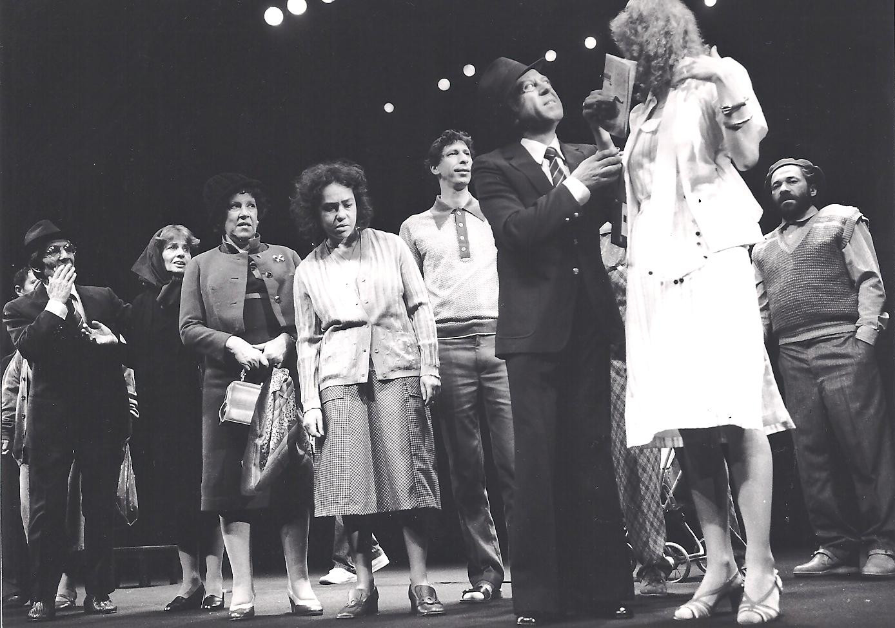
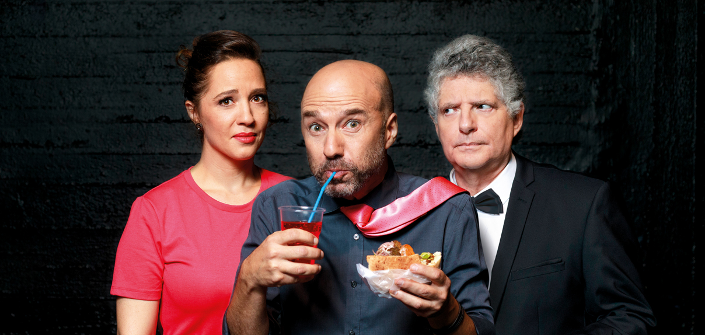
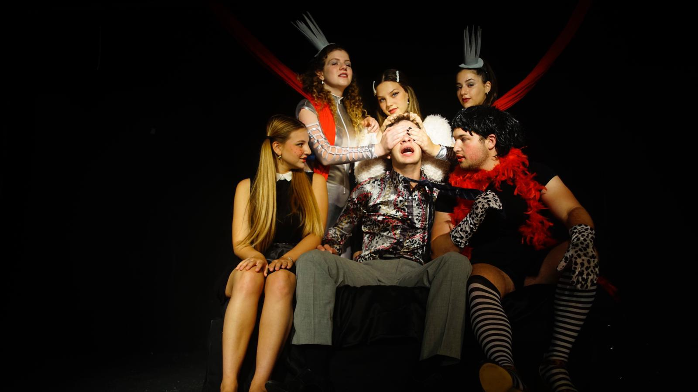

הפקות
-

אוי אליאס אליאס
בימוי: —
2013
-

אורזי מזוודות
בימוי: מייקל אלפרדס
1983
-

איחש פישר
בימוי: רוני פינקוביץ'
2010
-

אישל ורומנצקה
בימוי: —
2019
-

אשכבה
בימוי: חנוך לוין
1999
-

את ואני והמלחמה הבאה
בימוי: עדנה שביט
1968
-

גאולה
בימוי: טל ברנר
2013
-

האשה המופלאה שבתוכנו
בימוי: חנוך לוין
1994
-

הבכיינים
בימוי: אילן רונן
2000
-
הג'יגולו מקונגו
בימוי: חנוך לוין
1989
-
ההולכים בחושך
בימוי: חנוך לוין
1998
-

הופס והופלה
בימוי: אורי פסטר
1991
-

הוצאה להורג
בימוי: חנוך לוין
1979
-

הזונה הגדולה מבבל
בימוי: חנוך לוין
1982
-

הזונה מאוהיו
בימוי: חנוך לוין
1997
-

החייל הרזה
בימוי: טל ברנר
2016
-

הילד חולם
בימוי: חנוך לוין
1993
-

הלוויה חורפית
בימוי: חנוך לוין
1978
-

המתלבט
בימוי: חנוך לוין
1990
-

הנשים האבודות מטרויה
בימוי: חנוך לוין
1984
-

הפטריוט
בימוי: עודד קוטלר
1982
-

הרטיטי את לבי
בימוי: אודי בן משה
2007
-
השמשים
בימוי: יובל זמיר
2005
-
חנוך לוין — האופרה
בימוי: שירית לי וייס
2023
-

חפץ
בימוי: עודד קוטלר
1972
-

יאקיש ופופצ'ה
בימוי: חנוך לוין
1986
-

יסורי איוב
בימוי: חנוך לוין
1981
-

יעקובי ולידנטל [שם זמני]
בימוי: חנוך לוין
1972
-

כולם רוצים לחיות
בימוי: חנוך לוין
1985
-

כריתת ראש
בימוי: חנוך לוין
1996
-

מוריס שימל
בימוי: יעל רונן
2010
-

מי שלא נולד — מפסיד
בימוי: טל ברנר
2024
-

מלאכת החיים
בימוי: מיכאל גורביץ'
1989
-

מלכת אמבטיה
בימוי: דוד לוין
1970
-

מתאבל ללא קץ
בימוי: ארי פולמן
2020
-

נכנע ומנוצח
בימוי: חנוך לוין
1988
-

נעורי ורדה'לה
בימוי: חנוך לוין
1974
-

סוחרי גומי
בימוי: חנוך לוין
1978
-

סולומון גריפ
בימוי: הלל נאמן
1969
-
פופר
בימוי: חנוך לוין
1976
-

פעורי־פה
בימוי: רוברט סטורואה
1995
-

קטשופ
בימוי: דוד לוין
1969
-

קרום
בימוי: חנוך לוין
1975
-

רווקים ורווקות
בימוי: אלדד זיו
2002
-
רומנטיקאים
בימוי: מיכה לבינסון
2002
-

רצח
בימוי: עומרי ניצן
1997
-

שוזס ובז'ז'ינה
בימוי: אירנה גורליק
2012
-

שיץ
בימוי: חנוך לוין
1975